Introduction
This particular project is going to be simulating a 3DOF (degrees of freedom) longitudinal model aircraft model. One would do a 3DOF simulation like this instead of a 6DOF simulation because it's much simpler to do control system design and performance analysis on a 3DOF versus a 6DOF model.
Mathematical Model
You can’t do a simulation without the mathematical model. The model provides all the physics and dynamics that the vehicle will do when you subject it to certain conditions.
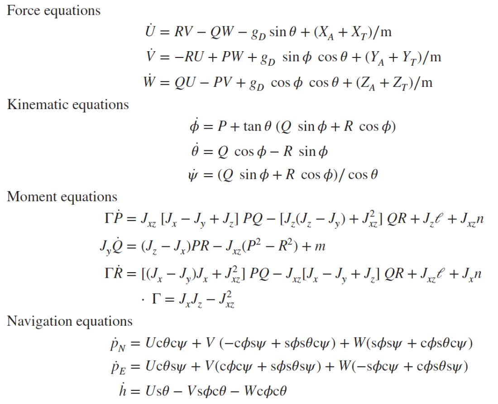Figure 1: Equations of motion for a typical 6 DOF aircraft
Pretty scary, right? That’s what I thought when I first looked at this, but it’s actually not as scary as one may think. Although I will not be fully deriving these equations in this blog post, maybe in a future post I will.
For now, we are going to reduce these equations down to separate the longitudinal motion from the lateral motion. Let’s start with the force equations in Figure 1. I’ve put them here again for the reader’s convenience.
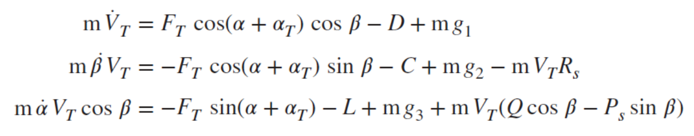Figure 2: Force Equations
One thing that we can strongly simplify in this equation is the gravity term, gd. Here is the entire gravity matrix shown below. This gravity term is transformed from the inertial frame to the wind frame.
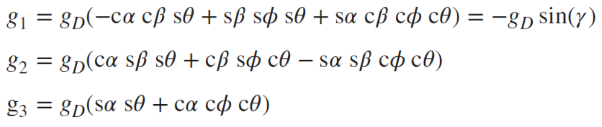Figure 3: Gravity Equations
Yikes. That’s a lot of terms, and this set of equations is basically coupled in every rotational degree of freedom. But we’re trying to analyze just the longitudinal motion right now so let’s make a couple of huge simplifying assumptions.
If we’re just analyzing longitudinal motion then we can say that there is no rolling motion (phi = 0) and sideslip angle is small (for small angle approximation). This will reduce down our gravity term down to this:
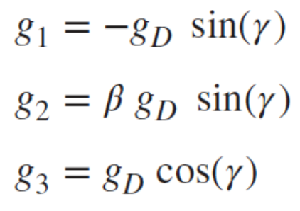Figure 4: Simplified Gravity Terms
Much better. Now our force equations look like this as well.
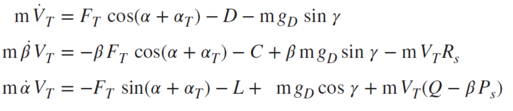Figure 5: Simplified Force Terms
Another awesome thing is that we don’t even have to use all of these terms for longitudinal motion. The middle term with the beta dot in it is definitely not useful for us right now.
Let’s make more simplifying assumptions. This time on the kinematic equations (see figure 1) though. We can apply our roll angle assumption and we will get this from the second kinematic equation.
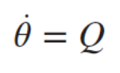We can also say that roll and yaw rates are small as well to yield this from the pitching moment equation in figure 1.
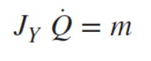And.. we’re done! Here are all the equations that we have right now where our state derivative vector would be Vt dot, alpha dot, theta dot, and Q dot.
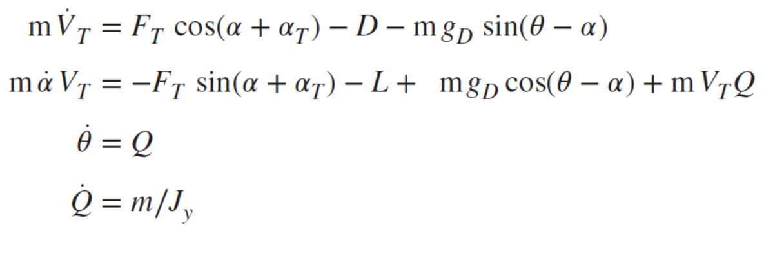Simulation
Now we can start simulating these equations. We can propogate these equations of motion in a number of ways, but I will be using a Runge Kutta 4th order integrator. Here are the state vector inital conditions as well:
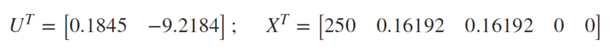There are actually two more control inputs that we are considering (cg position and landing legs) that are not shown here.
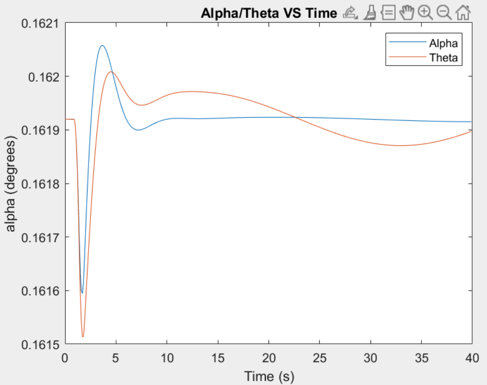Figure 7: Alpha and Theta interplay VS Time
Above is simulated with an elevator kick at 1 second with a kick back at 1.5 seconds. These oscillations die very quickly at around 10 seconds, where it seems to make a difference of .001 while oscillating. This response is known as the short period response, where the more negative eigenvalue is induced, resulting in an extremely fast response time.
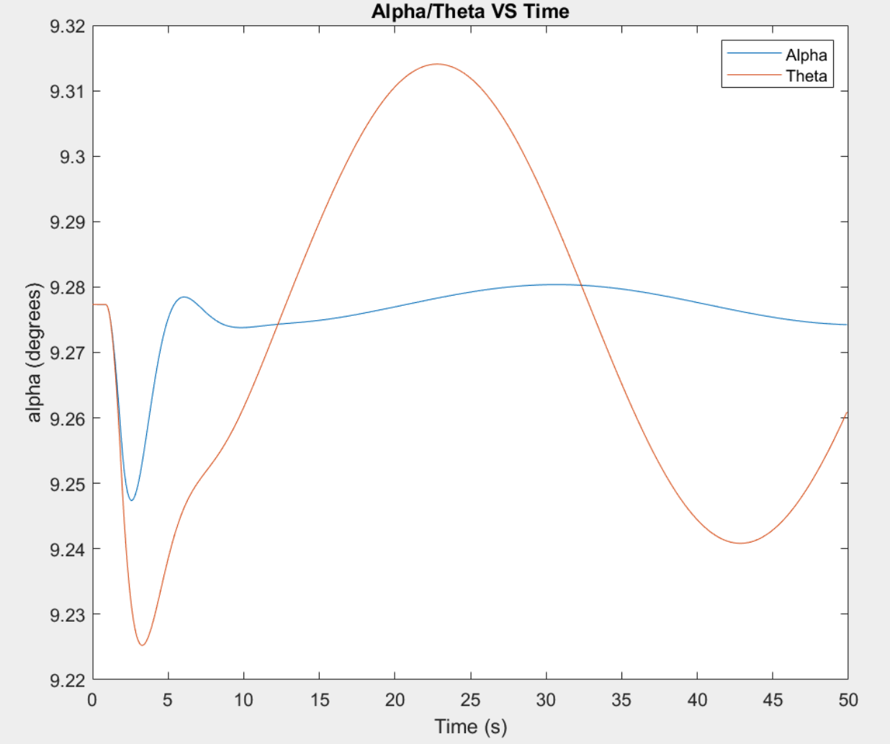Figure 8: Alpha and Theta interplay VS Time
Above we have another graph where the elevator kicked .1 radians from 1 - 4 seconds and from 4-7 seconds it kicked .1 radians in the other way. This excited the phugoid mode, where theta varied heavily with time while alpha is not. Plotting other parameters such as speed, altitude and flight path angle show that they also vary significantly with theta.
Conclusion
We could do a lot more simulation and control analysis of this system but this post was just meant as an introduction to modeling and simulation of this system. However, we learned a lot just from deriving and simulating a simple case!
In the future I will be posting more about the longitudinal model as well as the lateral model but this blog post is long enough already. Any feedback on this particular post is greatly appreciated as well!